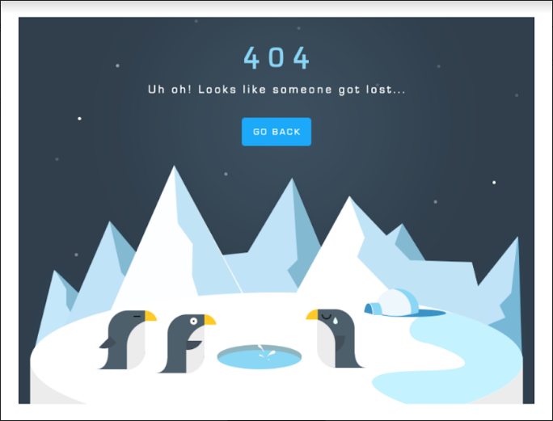
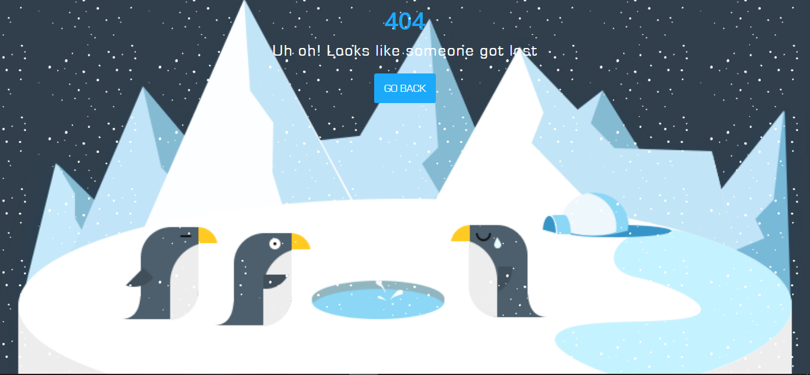

Chapter 3: 404 Penguins Page
404 Overview
Overview
An overlook on what we gonna build
Details
Prototype 
Target
- Create snowfall animation
- Make image stick to the page bottom no matter screen size
Components
- 404 logo
- Error message
Go backbutton- Sticky background image
- Snowfall animation
Bookmarks
Prepare Files
Overview
Bootstrap the project
Details
What we gonna use
bootstrap.min.css- CSS keyframe
Building folder structure
The folder structure is pretty similar to OpenCharity project

Bootstraping steps
Go to https://drive.google.com/drive/folders/1WAn16FJ0s-6j1DiR2-LcJ9HAQoPlIBGY to download PSD file and save it to project
Go to https://www.dafontfree.net/freefonts-eurostile-f484.htm to download eurostile font
- Use photoshop to extract neccessary images.
- One penguin for favicon
- Three penguins with iceberg as background
Note down colors to be used.
Put
bootstrap.min.cssinto .assets/style/cssRun following commands
git init,echo > README.md,git add .,git commit -m "Bootstrap project"
Bookmarks
Start code
Overview
Implement UI Styling Page Add animation
Details
Components implemented
- One wrapper container containing
- Header: 404 with response text and
GO BACKbutton - One image as background
- One
divto handle the animation
- Header: 404 with response text and
Styling
Mainly used colors and fonts
@gray_color: #313f4c; @blue-color: #1ca9f9; @white-color: #ffffff; @Eurostile: 'Eurostile';
Animation was created using CSS @keyframe. It's a long explaination. Check out the Bookmarks
Result

Bookmarks
Link to GitHub project 404 Penguins Page
404 Recap
Overview
Advices on project
Details
- If you fail try again and again
- Should not add animation to every section cuz it could be annoying
- Mention the final project
Bookmarks
Link to GitHub project 404 Penguins Page